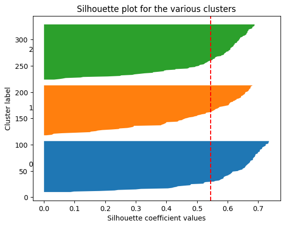
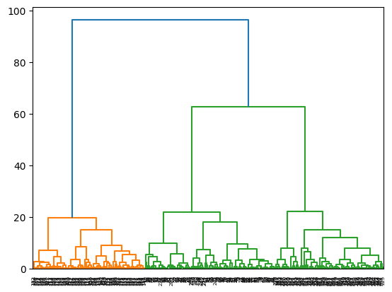
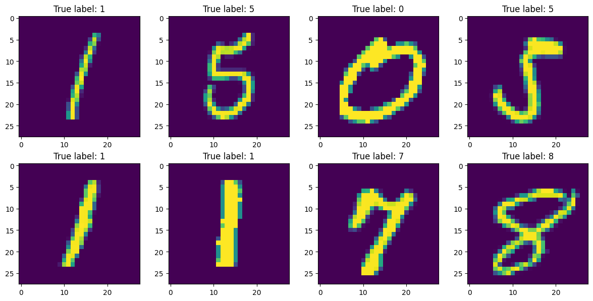

import numpy as np
def simulateData(k, n):
X = np.row_stack([np.random.multivariate_normal(np.random.uniform(-10,10,2), 3*np.eye(2), size=n) for i in range(k)])
return X, np.repeat([str(i) for i in range(1,k+1)], n)TP4 - Clustering
Exploratory Data Analysis & Unsuperivsed Learning
Course: PHAUK Sokkey, PhD
TP: HAS Sothea, PhD
Objective: Clustering is technique of ML and Data Analysis used to group similar data points together. The goal is to partition a dataset into distinct subsets, or clusters, such that data points within each cluster are more similar to each other than to those in other clusters. This practical class aims to enhance your understanding of two different clustering algorithms, including their strengths and weaknesses.
The
Jupyter Notebookfor this TP can be downloaded here: TP4-Clustering.
1. Kmeans Algorithm
We will begin with a toy example using simulated dataset.
a. Write a function simulateData(k, n) that generates an ideal dataset for Kmeans, consisting of \(k\) groups with \(n\) observations within each group, of 2D normally distributed data points (you can choose any value of \(k\in\{3,4,5,...,8\}\)). Visualize your dataset, make sure that the groups are spread evenly.
data, labels = simulateData(3,100)
import pandas as pd
df_sim = pd.DataFrame({
'x' : data[:,0],
'y' : data[:,1],
'label' : labels
})import plotly.express as px
fig = px.scatter(df_sim, x="x", y="y", color="label")
fig.update_layout(width=500, height=400, title="Simulated data with 3 clusters")
fig.show()Unable to display output for mime type(s): application/vnd.plotly.v1+jsonb. We are trying to detect the number of clsuter \(k\) using Within-class variance: - Check the equality: Within-class variation + Between-class variation = Total variation. - Perform Kmeans algorithm using KMeans from sklearn.cluster module with different numbers of clusters and compute within-class variation or each case. - Draw the values of within-class variances as a function of number of cluster. - What do you observe?
- Check the equality:
We have: - \(\text{V}_{\text{Between}}=\sum_{j=1}^kn_j\|\overline{x}_j-\overline{x}_n\|^2\) where \(n_j\) be the size of the group \(j\), \(\overline{x}\) and \(\overline{x}_j\) be the global mean and the mean of group \(j\in\{1,2,...,k\}\) respectively. - \(\text{V}_{\text{Within}}=\sum_{j=1}^kn_j\hat{\sigma}_j^2\) where \(\hat{\sigma}_j^2=\frac{1}{n_j}\sum_{i=1}^{n_j}\|x_i^{(j)}-\overline{x}_j\|^2\) be the variance of group \(j\in\{1,2,...,k\}\). - \(\text{V}_{\text{Total}}=\sum_{j=1}^k\sum_{i=1}^{n_j}\|x_i^{(j)}-\overline{x}_n\|^2\) the total sum of squares from all points to the globle mean, and \(x_i^{(j)}\) be the data point within group \(j\). This quantity does not depend on the number of group \(K\) as it can be expressed as \(\text{V}_{\text{Total}}=\sum_{i=1}^{n}\|x_i-\overline{x}_n\|^2\).
By using the formula of \(\|u+v\|^2=\|u\|^2+\|v\|^2+2\langle u,v\rangle\) one has \[ \begin{align*} \text{V}_{\text{Total}}&=\sum_{j=1}^k\sum_{i=1}^{n_j}\|x_i^{(j)}-\overline{x}_j+\overline{x}_j-\overline{x}_n\|^2\\ &=\sum_{j=1}^k\sum_{i=1}^{n_j}\left(\|x_i^{(j)}-\overline{x}_j\|^2+\|\overline{x}_j-\overline{x}_n\|^2+2\langle x_i^{(j)}-\overline{x}_j,\overline{x}_j-\overline{x}_n\rangle\right) \end{align*} \]
Consider \(\sum_{j=1}^k\sum_{i=1}^{n_j}\langle x_i^{(j)}-\overline{x}_j,\overline{x}_j-\overline{x}_n\rangle=\sum_{j=1}^k\langle\underbrace{\sum_{i=1}^{n_j}(x_i^{(j)}-\overline{x}_j)}_{=0},\overline{x}_j-\overline{x}_n\rangle=0\), where \(\langle x,y \rangle\) is the scalar product of \(x\) and \(y\).
\[ \begin{align*} \Rightarrow\text{V}_{\text{Total}}&=\sum_{j=1}^k\sum_{i=1}^{n_j}\left(\|x_i^{(j)}-\overline{x}_j\|^2+\|\overline{x}_j-\overline{x}_n\|^2\right)\\ &=\sum_{j=1}^kn_j\left[\frac{1}{n_j}\sum_{i=1}^{n_j}\|x_i^{(j)}-\overline{x}_j\|^2\right]+\sum_{j=1}^k\sum_{i=1}^{n_j}\|\overline{x}_j-\overline{x}_n\|^2\\ &=\sum_{j=1}^kn_j\hat{\sigma}_j^2+\sum_{j=1}^kn_j\|\overline{x}_j-\overline{x}_n\|^2\\ &=\text{V}_{\text{Within}}+\text{V}_{\text{Between}} \end{align*} \]
from sklearn.cluster import KMeans
# when k = 2
km = KMeans(n_clusters=2)
km_fit = km.fit(data)
# WSS
print(f"Within variation: {km_fit.inertia_}")Within variation: 4975.010322497226# Compute Within variation by hand
def within_variation(X, km):
wss = 0
for i in range(len(km.cluster_centers_)):
points = X[km_fit.labels_ == i]
wss += np.sum((points-km.cluster_centers_[i])**2)
return wss
print(f"Within variation: {within_variation(data, km_fit)}")Within variation: 4975.010322497227# Compute WSS as a function of number of clusters
import plotly.graph_objects as go
WSS = []
for k in range(2,10):
km = KMeans(n_clusters=k)
km_fit = km.fit(data)
WSS.append(km_fit.inertia_)
# Draw the curve
fig = go.Figure(go.Scatter(x=list(range(2,10)), y=WSS))
fig.update_layout(width=500, height=400, title="WSS as a function of number of clusters")
fig.show()Unable to display output for mime type(s): application/vnd.plotly.v1+jsonWe observed that the elbow accurs at the true number of cluster \(k=3\). This is mostly true and you can check it with more simulations.
c. Can you propose a systematic approach to approximate the most suitable number of clusters? - Run your code \(30\) times on the same data, how many times did you get the number of clusters right? Why? - Try to set argument n_init = 5 in KMeans module then use the previous method to approximate the optimal number of clusters. This time, within \(30\) runs, how many times do you get the number of clusters right? Explain why.
From the previous observation, it’s natural to build a function to detect the elbow in the above curve.
def opt_cluster(X, list_k = []):
wss = []
for k in list_k:
km = KMeans(n_clusters=k)
km_fit = km.fit(X)
wss.append(km_fit.inertia_)
slop = np.diff(wss)
return list_k[np.argmax(slop[:-1]/slop[1:])] + 1opt_list = []
for i in range(30):
opt_list.append(opt_cluster(data, list_k=list(range(2,11))))
print('Observed number of clusters within 30 runs:')
pd.DataFrame(np.unique(opt_list, return_counts=True), index=('k', 'Count'))Observed number of clusters within 30 runs:| 0 | 1 | |
|---|---|---|
| k | 3 | 6 |
| Count | 29 | 1 |
- When
n_init = 5:
def opt_cluster(X, list_k = [], n_init = 1):
wss = []
for k in list_k:
km = KMeans(n_clusters=k, n_init=n_init)
km_fit = km.fit(X)
wss.append(km_fit.inertia_)
slop = np.diff(wss)
return list_k[np.argmax(slop[:-1]/slop[1:])] + 1opt_list = []
for i in range(30):
opt_list.append(opt_cluster(data, list_k=list(range(2,11)), n_init=5))
print('Observed number of clusters within 30 runs:')
pd.DataFrame(np.unique(opt_list, return_counts=True), index=('k', 'Count'))Observed number of clusters within 30 runs:| 0 | |
|---|---|
| k | 3 |
| Count | 30 |
The result of
KMeansis sensitive to the initalization of the centroids.n_initis the number of tries in Kmeans with different initial centroids. The best one amont these tries is the final result ofKMeans. This is used to avoid being stuck in the local structure due to bad initialization.
d. Compute and visualize Silhouette Coefficient for each number of clusters considered above. Conclude.
from sklearn.metrics import silhouette_score, silhouette_samples
import matplotlib.pyplot as plt
kmeans = KMeans(n_clusters=3, random_state=42)
clusters = kmeans.fit_predict(data)
# Compute silhouette scores
silhouette_avg = silhouette_score(data, clusters)
sample_silhouette_values = silhouette_samples(data, clusters)
silhouette_avg = silhouette_score(data, clusters)
sample_silhouette_values = silhouette_samples(data, clusters)
# Plot silhouette scores
fig, ax1 = plt.subplots(1, 1)
y_lower = 10
for i in range(kmeans.n_clusters):
ith_cluster_silhouette_values = sample_silhouette_values[clusters == i]
ith_cluster_silhouette_values.sort()
size_cluster_i = ith_cluster_silhouette_values.shape[0]
y_upper = y_lower + size_cluster_i
ax1.fill_betweenx(np.arange(y_lower, y_upper), 0,
ith_cluster_silhouette_values)
ax1.text(-0.05, y_lower + 0.5 * size_cluster_i, str(i))
y_lower = y_upper + 10
ax1.set_title("Silhouette plot for the various clusters")
ax1.set_xlabel("Silhouette coefficient values")
ax1.set_ylabel("Cluster label")
ax1.axvline(x=silhouette_avg, color="red", linestyle="--")
plt.show()
2. Hierarchical clustering
Unlike Kmeans algrithm, Hierarchical clustering or hcluster does not require a prior number of clusters. It iteratively merges (agglomerative or bottom up approach) into less and less clusters starting from each points being a cluster on its own, or separate the data point (divisive or top-down approach) to create more and more clusters starting from one clsuter containing all data points.
a. Apply hierarchical cluster on the previously simulated dataset.
from sklearn.cluster import AgglomerativeClustering
from scipy.cluster.hierarchy import dendrogram, linkage
linkage_data = linkage(data, method="ward", metric="euclidean")b. Plot the associated Dendrograms of the resulting groups.
dendrogram(linkage_data)
plt.show()
c. Can you decide the most suitable number of clusters from the previous dendrogram?
The heights of the dendrogram represent the increment of variance within group when the two groups are merged. At any merge, when the variance within group increases greatly, that represents a bad merge. In other words, the previous number of group should be considered a good number of cluster. In the above dendrogram, when \(3\) clusters are merged into \(2\), the increment in height is significantly large compared to the previous merge, this indicates that \(3\) should be a suitable number of cluster.
id_opt = np.argmax(linkage_data[1:,2]/linkage_data[:-1,2])
list(range(299,0,-1))[id_opt]+143. Real dataset
Now apply both algorithms on Mnist dataset of hand written digits can be downloaded here: Mnist dataset or import from keras.datasets module as follow:
from keras.datasets import mnist
import matplotlib.pyplot as plt(X_train, y_train), (X_test, y_test) = mnist.load_data()import numpy as np
ID = np.random.randint(low=0, high=len(y_train), size=8)
fig, ax = plt.subplots(2,4, figsize=(12, 6))
for i in range(8):
ax[i//4, i%4].imshow(X_train[ID[i],:,:])
ax[i//4, i%4].set_title(f"True label: {y_train[ID[i]]}")
plt.tight_layout()
plt.show()
KMeans on Mnist dataset
# Reshape data from 3D array to (n, 784)
X_train_reshaped = X_train.reshape(-1, 28*28)
X_test_reshaped = X_test.reshape(-1, 28*28)
# Apply KMeans
km_mnist = KMeans(n_clusters=10)
km_mnist = km_mnist.fit(X_train_reshaped)In actual problems, we never know the real class of each cluster. However here, we know the true label of images therefore we can try to see if the same digit images would likely belong to the same group or not. This can be done using confusion matrix as follow.
train_cluster = km_mnist.predict(X_train_reshaped)
test_cluster = km_mnist.predict(X_test_reshaped)
from sklearn.metrics import confusion_matrix
confusion_matrix(y_train, train_cluster)array([[ 39, 579, 89, 4676, 27, 0, 237, 233, 14, 29],
[ 9, 6, 4, 0, 7, 3713, 11, 6, 9, 2977],
[4193, 139, 230, 55, 61, 323, 161, 390, 37, 369],
[ 209, 1225, 65, 33, 32, 373, 61, 3888, 161, 84],
[ 14, 12, 2188, 4, 1536, 98, 127, 0, 1632, 231],
[ 14, 1826, 186, 63, 266, 119, 140, 1782, 313, 712],
[ 80, 125, 592, 73, 1, 234, 4591, 31, 1, 190],
[ 30, 3, 546, 13, 2824, 223, 2, 3, 2385, 236],
[ 43, 3104, 134, 29, 230, 276, 57, 1372, 214, 392],
[ 5, 44, 1382, 29, 1707, 139, 8, 85, 2473, 77]],
dtype=int64)This confusion matrix is not correctly defined as the ties are broken arbitrarily in KMeans results (it doesn’t know which is the 1st, 2nd or 3rd… group and therefore the cluster index is defined arbitrarily). We have to arrange this confusion matrix.
from scipy.optimize import linear_sum_assignment
def arrange_confusion_matrix(y_true, y_pred):
# Compute the initial confusion matrix
conf_mat = confusion_matrix(y_true, y_pred)
row_ind, col_ind = linear_sum_assignment(-conf_mat)
sorted_conf_mat = conf_mat[:, col_ind]
res = y_pred.copy()
print(np.unique(y_pred))
for i in range(len(np.unique(y_true))):
res[y_pred == col_ind[i]] = i
return sorted_conf_mat, resar_conf_mat, ar_pred = arrange_confusion_matrix(y_train, train_cluster)
print(f'The confusion matrix: {ar_conf_mat}')
print(f'Percentage of correctly clustered: {np.sum(np.diag(ar_conf_mat)/np.sum(ar_conf_mat).sum()) * 100}%')[0 1 2 3 4 5 6 7 8 9]
The confusion matrix: [[4676 0 39 233 89 29 237 27 579 14]
[ 0 3713 9 6 4 2977 11 7 6 9]
[ 55 323 4193 390 230 369 161 61 139 37]
[ 33 373 209 3888 65 84 61 32 1225 161]
[ 4 98 14 0 2188 231 127 1536 12 1632]
[ 63 119 14 1782 186 712 140 266 1826 313]
[ 73 234 80 31 592 190 4591 1 125 1]
[ 13 223 30 3 546 236 2 2824 3 2385]
[ 29 276 43 1372 134 392 57 230 3104 214]
[ 29 139 5 85 1382 77 8 1707 44 2473]]
Percentage of correctly clustered: 53.93666666666667%We can use WordCloud to summarize the performance as follow:
from wordcloud import WordCloud
dict_digits = {
0: "Zero",
1: "One",
2: "Two",
3: "Three",
4: "Four",
5: "Five",
6: "Six",
7: "Seven",
8: "Eight",
9: "Nine"
}
fig, axes = plt.subplots(2,5, figsize=(15, 6))
for i in range(10):
token = ar_pred[y_train == i]
token = [dict_digits[j] for j in token]
tokens = ' '.join(token)
wc = WordCloud(width=300, height=300, background_color="white", min_font_size=10).generate(tokens)
axes[i // 5, i % 5].imshow(wc)
axes[i // 5, i % 5].set_xticklabels("")
axes[i // 5, i % 5].set_yticklabels("")
axes[i // 5, i % 5].set_title(f"Word Cloud of Image Labeled {i}")
plt.tight_layout(pad=1)
plt.show()Let’s try other values of \(K=2,...,10\) then used our previous function to detect the number of clusters for
Mnistdataset.
import plotly.graph_objects as go
WSS = []
for k in range(2,10):
km = KMeans(n_clusters=k)
km_fit = km.fit(X_train_reshaped)
WSS.append(km_fit.inertia_)
# Draw the curve
fig = go.Figure(go.Scatter(x=list(range(2,10)), y=WSS))
fig.update_layout(width=500, height=400, title="WSS as a function of number of clusters")
fig.show()Unable to display output for mime type(s): application/vnd.plotly.v1+jsonslop = np.diff(WSS)
list_k=list(range(2,11))
print(f'Observed number of clusters for Mnist data: {list_k[np.argmax(slop[:-1]/slop[1:])] + 1}')Observed number of clusters for Mnist data: 6Hierarchical Clustering
Dendrogram is very costly, we randomly sampled 10000 observations for clsutering.
import numpy as np
sample_id = np.random.choice(len(y_train), size=10000, replace=False)
linkage_data = linkage(X_train_reshaped[sample_id ,:], method="ward", metric="euclidean")
id_opt = np.argmax(linkage_data[1:,2]/linkage_data[:-1,2])print(f"Optimal number of clusters of Mnist dataset by dendrogram ratio: {list(range(linkage_data.shape[0]-1,0,-1))[id_opt]+1}")Optimal number of clusters of Mnist dataset by dendrogram ratio: 5